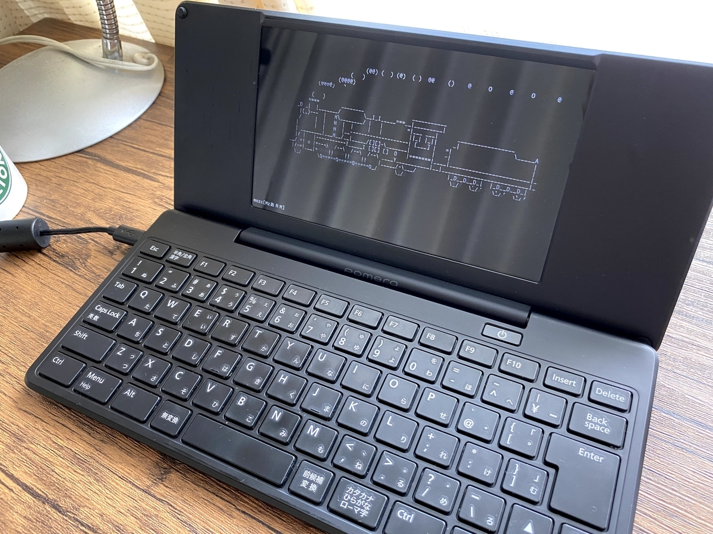

投稿日: 2021/07/27 23:24:36
カテゴリ: Linux
サムネイル: 
最近ついにポメラDM200を手に入れて、EKESETE.netで配布されているDebianを入れてポメラハックをし始めた。Xを起動してGUIを起動すると電池を食うのもあって、初期のコンソールのまま楽しむことにした。
昔から格安パソコンを手に入れてDebianを入れてメインパソコンとして使ってきたので、メインがLinuxでこんなに小さいPCが手に入るなんて夢のようだった。GPD Pocketも好きだったのだけれど、やっぱりポメラは本来が文字打ち用に作られているだけあって、特にDM200はキーボードの品質が高くて素敵。
結果的には、せっかくのARM32マシンということもあって、ARMで動くいろんな言語やコンパイラを入れて遊んでいて、とりあえず最初に写真にある画面にSLが走るslコマンド（apt install sl）を動かしたり、コンソールで動くぷよぷよなんかを素朴に楽しんだりした。
ただここまで動かせるようになるまでは相当に時間がかかって、自分が中古で購入したDM200はファームウェアが1.4というのもあるのか、通信機能はDebian側ではBluetoothしかうまくいかず、Wi-Fiにも繋げないし、給電ハブを使ってもUSBはどうしても使えなかった。
（7/29 追記: https://github.com/nobotty/Documents/wiki/Pomera-DM200 にヒントを見つけ、無事Wi-Fiが繋げるようになった！原因は一度Linuxの書き込みに失敗して二度上書きしたためで、別のSDできちんとリストアしてから、元のDebianを起動すると、/opt/etc/firmware 内にちゃんとファイルがあるので、これらをコピーしたところ問題なく接続できた。USBもそれが原因かも。後で検証。 ）
そんな環境でどうやってプログラムをインストールしたりしようか悩んだ末、/mnt/vfat としてマウントできるSDカード本体を使うしかなかったので、まず必要なdebファイルを別のパソコンでダウンロードした後にSDにコピーして、dpkg -i で一つ一つインストールした。
slコマンドくらいはすぐにインストールすることができたのだけれど、Bluetooth経由でiPhoneテザリングをすることを目標にしたところ、依存ファイルが超多くて相当に苦戦。しぶしぶ自作のRubyスクリプトを書いて依存ファイルを列挙したりしながら半手作業でコピーして、実際テザリングできるところまで行くのに半日潰れた。
結果的には、ちゃっとテザリングでネットできて感動したし、一度ネットに繋がればaptが使えるようになってホッとした。
ただ、安心したのもつかの間で、Bluetoothテザリングは10KB/s程度の超低速でしかネットが使えないと知って愕然。1MBのファイルをダウンロードするのに10分くらいかかる。
結局、aptで列挙される必要なファイルと容量を目で確認して、そのうち大きなファイルはさっきのスクリプトを使って別のPCでまとめてダウンロードしてコピー、dpkg。ネット開通前に比べてaptが使える分だけ作業は楽になったけど、結局、やってることは開通前とほぼ変わらず…。
でも、そうこうしているうちに欲しいプログラムは一通り揃って、最初こそただのコンソールだったけど、byobuを入れたりしてすっかりカラフルな環境に早変わり。ここまでくればもうLinuxとしては何も遜色なく使える。
ここまできてようやく、自分がそもそも何をしたかったのかを思い出し、新下駄配列＋Programmer's Dvorakを打てるようにさらに調査と試行錯誤をしてみて、少なくともProgrammer's Dvorak (DvorakP) は問題なく使えるようになった。DvorakPのX用のキーマップファイルはすぐ手に入るものの、XなしのコンソールだけでDvorakPを使うためのキーマップは案外見つからなかったので、新しく書いた。
自分が普段使っている、CmdQwertyというかCtrlQwertyに近いものも収録してある。こちらはCtrl押下時にQwertyのショートカットが打てて便利だけど、一部対応できないCtrlキーがある。
さて一番肝心の新下駄配列の動作については、実はまだうまくいかず。XでGUIを有効化すれば多分簡単に使えるのだと思うけど、CUI環境のせいかARM環境のせいなのか、oyainputでもうまく動かず。
（7/29 追記: Linux on Pomera DM200 人柱版 その2 – 記録 の2018/5/28追記に記載があるように、カーネルの更新で /dev/uinput を追加するアップデートを作ってくださっているので、 Pomera DM200 · nobotty/Documents Wiki · GitHub にに記載の手順で更新をカーネル更新をすると、oyainputなどを動かすことが可能。素晴らしい。）
新下駄配列をLinuxで動かすプログラムを書いてくれた人が既にいて、OCamlをビルドしてみようとしたけれど、なにせネット通信が貧弱なせいで、opamのパッケージ取得にはとんでもなく時間がかかる上に、ARM環境というのも相まって、必要なパッケージの最新バージョンが手に入れられなかったりする始末。なのでokeyfumはまだビルドをすることすらできない。
……という感じで、当初の目標であった新下駄配列＋DvorakPの小型メモマシンを作る計画自体はまだ実現できていないものの、DvorakP配列が使える便利なDebian ARMパソコンとしては十分完成した感じがする。
この端末だけ持ち歩いてメモとかするには、今のところはまだ結局元のポメラとして親指シフトで入力して、プログラムしたいときはDebianを起動するという感じ。ちょっと悔しいけど、どちらも起動できるというのはホント便利。
個人的にはコンソール専用ミニノートは喉から手が出るほど欲しかったので、それだけでも嬉しいのだけど、Xを起動させればoyainputとか、末には新下駄配列も使えるかもしれないと思うと、どうしてもうまく行かないときにはGUIも有効にするかな。
ちなみに、このポメラを丸２日ハックしたりプログラムを書いたりを極力DvorakPを使用してやっていて、自分のDvorakPの熟練度はだんだんと上がってきた。逆にときたまQwertyが入力できなくなって焦るけど、しばらく入力していれば感覚は戻る。なぜかQwertyで日本語を打つときは何も支障がないので不思議。DvorakとQwertyは似ている部分も多いので頭が混乱するんだろうか？もう少しDvorakの習熟度が上がって、何も意識することなく打てるレベルになれば、きっとQwertyに切り替えるのもそんなに苦じゃなくなると信じたい。逆かな。